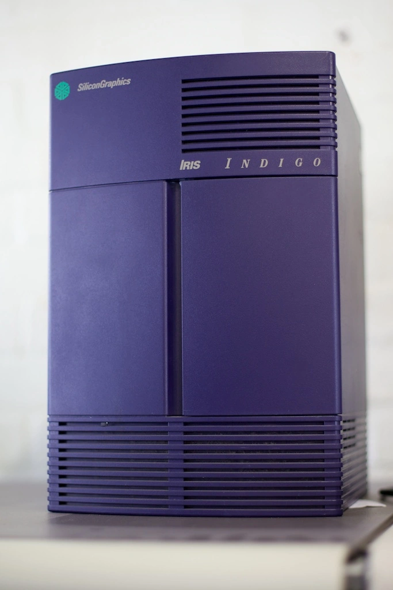

History of Video Games
In the Beginning
Tennis for Two
Tennis for Two is one of the earliest examples of a modern video game. It was developed by William A. Higinbotham, of the National Laboratory in New York, as far back as 1958! It ran on an analog computer and used an oscilloscope as its display.

Transition to 3-D
SGI or Silicon Graphics Incorporated, founded in 1981 in Mountain View, California, was a manufacturer and producer of high-end computer hardware and software. They are better known in the industry for their impact on 3-D graphics, and their uses in video games. Games such as Donkey Kong Country, for the Super Nintendo made use of 3-D models generated on such machines.

Modern Video Games
The concept of video games has changed dramatically over the years. From basic two-dimensional sprites to the vast three-dimensional open worlds that we are so used to today, it's hard to believe that they are in fact related!